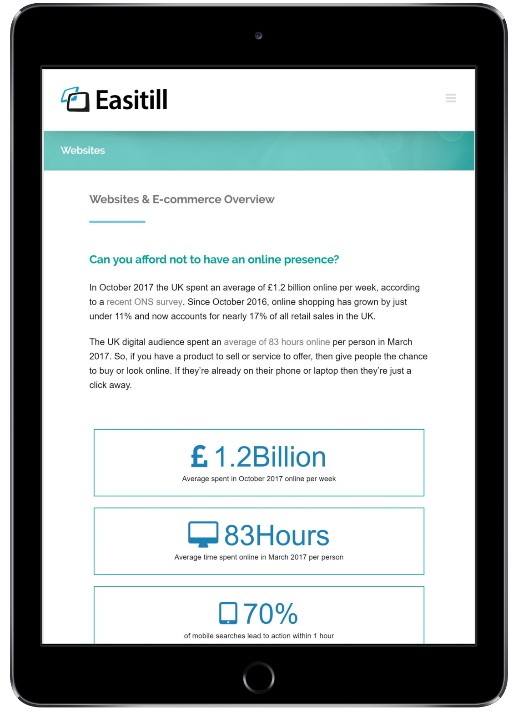

Easitill Ltd. is a retail solutions company based in Brixworth, Northamptonshire which offers a reliable suite of systems to general retailers. During my time as a Web Designer, I also had the chance to be a part of the redesign project for our main website.
Visit Website
